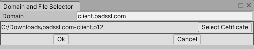

Certification Manager Window
The Window/Best HTTP/Addons/TLS Security/Certification Window menu item (or CTRL+ALT+E shortcut) opens the addon's Certification Manager. Using this window certificates can be added, updated and deleted.
Trusted Root CAs
These are the basis of the trust chain, servers doesn't send root certificates the client must include the roots certificates of the accessed endpoints.
Reset URL: Reset the URL input back to its addon supplied url.
URL Input: The URL that the addon going to download the certifications. The addon expects CSV formatted data, but the URL can point to a local file using the file:// protocol. The default URLs are pointing to Mozilla repositories.
Download: Clicking on this button start the downloading, content parsing and loading process. Downloading the certificates already uses all verification implemented in the addon.
Clear Before Download: Check to remove all non-locked and non-user added (if
Keep Customis checked) certificates before download.Clear: Remove all non-locked and non-user added (if
Keep Customis checked) certificates.Keep Custom: If set Clear buttons doesn't remove user added certificates.
Add Custom: Add certificates from .cer, .pem and .p7b files.
Delete Selected: Delete selected certificates. Locked certificates can't be deleted!
Search Input: It can be used to search certificates by their
Subjectname. Minimum 3 characters needed.-
Help (?) Button: Opens a browser window to this manual.
-
# Column: Index of the certificate.
User Column: It has a ✔, if it's a user-added certificate.
Lock Column: It has a ✔, if it's locked and can't be deleted. Currently only certificates needed to update from the default URL are locked.
Subject Column: Subject field of the certificate.
-
Issuer Column: Issuer field of the certificate.
-
Certifications: Number of certifications displayed.
Certificate Size Stats: Min, max, sum and average size of certificate data in bytes. This can help adjusting cache sizes.
Status: Status of the last operation.
Notice
Double clicking on a row or hitting Enter while at least one row is selected dumps out certification information to the console.
Trusted Intermediate Certificates
Because servers can choose to not send intermediate certificates it's a good practice to bundle them too.
Reset URL: Reset the URL input back to its addon supplied url.
URL Input: The URL that the addon going to download the certifications. The addon expects CSV formatted data, but the URL can point to a local file using the file:// protocol. The default URLs are pointing to Mozilla repositories.
Download: Clicking on this button start the downloading, content parsing and loading process. Downloading the certificates already uses all verification implemented in the addon.
Clear Before Download: Check to remove all non-locked and non-user added (if
Keep Customis checked) certificates before download.Clear: Remove all non-locked and non-user added (if
Keep Customis checked) certificates.Keep Custom: If set Clear buttons doesn't remove user added certificates.
Add Custom: Add certificates from .cer, .pem and .p7b files.
Delete Selected: Delete selected certificates. Locked certificates can't be deleted!
Search Input: It can be used to search certificates by their
Subjectname. Minimum 3 characters needed.-
Help (?) Button: Opens a browser window to this manual.
-
# Column: Index of the certificate.
User Column: It has a ✔, if it's a user-added certificate.
Lock Column: It has a ✔, if it's locked and can't be deleted. Currently only certificates needed to update from the default URL are locked.
Subject Column: Subject field of the certificate.
-
Issuer Column: Issuer field of the certificate.
-
Certifications: Number of certifications displayed.
Certificate Size Stats: Min, max, sum and average size of certificate data in bytes. This can help adjusting cache sizes.
Status: Status of the last operation.
Notice
Double clicking on a row or hitting Enter while at least one row is selected dumps out certification information to the console.
Client Certificates
A client certificate can be associated with a domain. If the server asks for a client certificate during the TLS handshake, the client going to send it back.

Add for domain: Clicking on it a
Domain and File Selectorwindow is shown. If the domain is filled and the certification file is selected clicking on the Ok button going to add the certification for the domain.Delete Selected: Delete selected domain-certificate associations.
-
Help (?) Button: Opens a browser window to this manual.
-
# Column: Index of the certificate
Target Domain Column: The certificate sent only if it's requested for the target domain.
Authority Column: Common Name or Organizational Unit Name from the certificate's Issuer field.
Certifications: Number of certifications displayed.
Certificate Size Stats: Min, max, sum and average size of certificate data in bytes. This can help adjusting cache sizes.
Clicking on the Add for domain button a new window opens to select the certification file and domain:

Then, clicking on the Ok button depending on the type of certificate file a window to input the file's password might open:

Testing HTTP Requests
A basic GET request can be sent out for the given domain to test the current setup.
Input field for the domain to test
Send button
Result of the request
Warning
Because of Connection Pooling a request that otherwise would fail can succeed if there's an already open connection to the domain!
Bottom Toolbar

Name and version number of this addon
Support e-mail